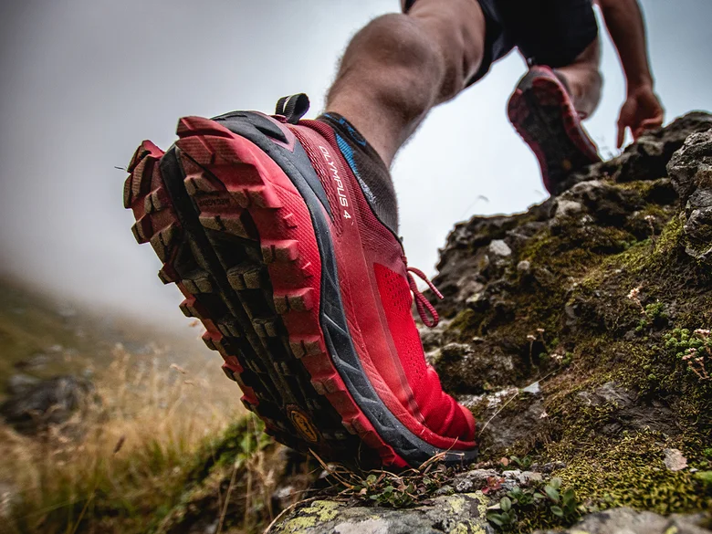
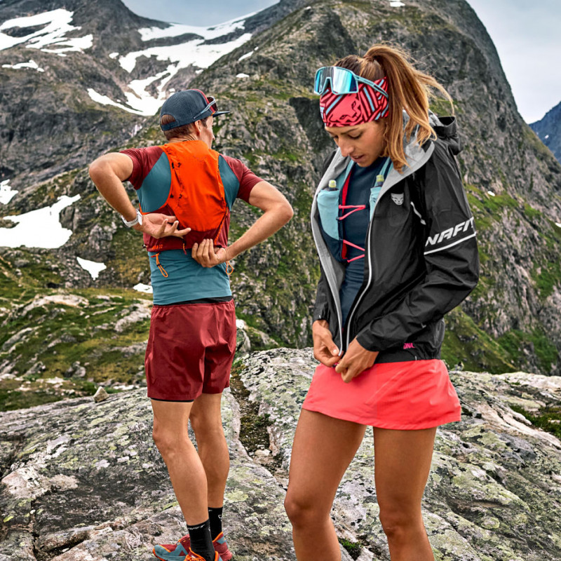
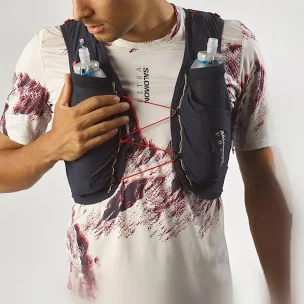
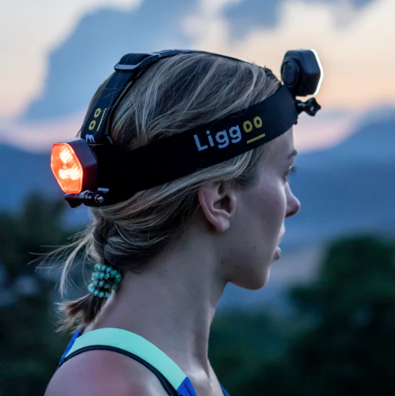
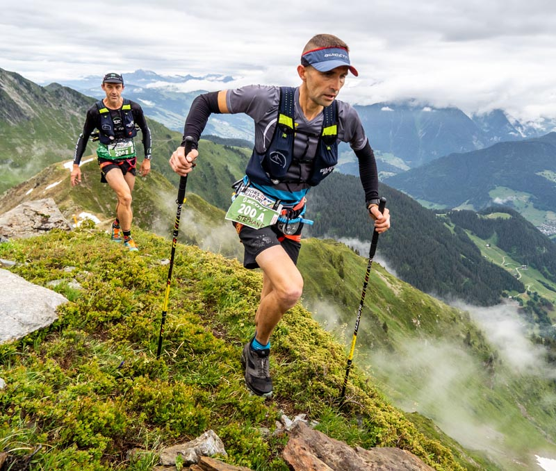

Les chaussures sont l'élément le plus crucial pour un ultra-traileur. Elles doivent être adaptées à la morphologie de votre pied, au type de terrain et à la distance prévue. Optez pour des modèles offrant un excellent amorti, une bonne adhérence et un maintien optimal pour éviter les blessures sur les terrains accidentés.

Les vêtements doivent être légers, respirants et adaptés aux conditions climatiques. Les couches techniques (base layer, mid-layer, shell) permettent de s'ajuster rapidement à la météo, qu'il s'agisse de pluie, de vent ou de froid. Un T-shirt anti-frottements et des shorts avec poches intégrées sont très appréciés.

Un bon sac à dos de trail est conçu pour être léger, ajusté et équipé de multiples compartiments pour transporter l'eau, la nutrition, les vêtements de rechange et le matériel obligatoire. Les modèles avec poches pour flasques ou réservoirs d'eau permettent de rester hydraté facilement.

Indispensables pour les courses nocturnes, les lampes frontales doivent être légères et offrir une autonomie suffisante pour durer toute la nuit. Vérifiez leur puissance en lumens pour une visibilité optimale.

Les bâtons réduisent la fatigue musculaire en montée et apportent une stabilité supplémentaire en descente. Choisissez des modèles pliables ou télescopiques pour faciliter leur transport.